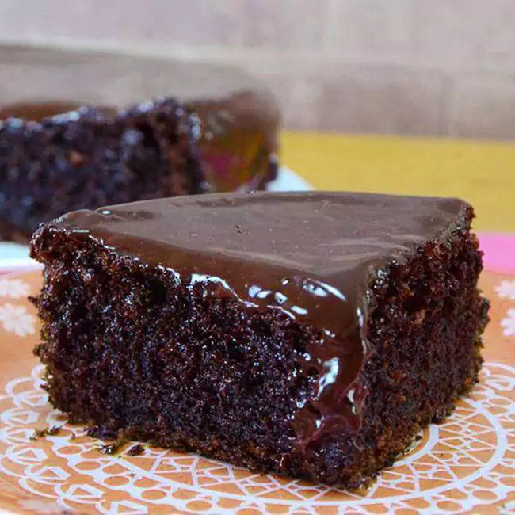

Bolo de Chocolate

Descrição
Como fazer um delicioso Bolo de Chocolate.
Ingredientes
- 1.6 xícara (chá) de farinha de trigo
- 2 colheres (sopa) de chocolate em pó
- 1 colher (sopa) de fermento químico em pó para bolos
- 1 colher (sopa) de bicarbonato de sódio
- 6 unidades de ovos
- 1.6 xícara (chá) de açucar
- 350 g de chocolate meio amargo (picado)
- 2 xícaras (chá) de iogurte
- 1 xícara (chá) de manteiga (em temperatura ambiente)
Passo a passo
- Em uma tigela, junte a farinha de trigo, o fermento, o bicarbonato de sódio e o chocolate em pó;
- Misture tudo muito bem e reserve;
- E uma outra tigela, adicione o açúcar, os ovos e misture bem;
- Em seguida junte essa mistura com a mistura da farinha de trigo;
- Mexa até que fique homogêneo;
- Reserve essa mistura.
- Em uma panela com água quente, coloque uma tigela de vidro, ou outra que possa ser aquecida em banho maria;
- DICA: você pode usar uma outra panela menor sobre a panela com água quente, se quiser.
- Adicione o chocolate meio amargo, a manteiga e o iogurte natural;
- Mexa, sem parar, em fogo baixo até que o chocolate derreta e a mistura fique bem cremosa;
- Em seguida, despeje essa mistura na mistura que estava reservada;
- Misture com a ajuda de um fouet (batedor de arame), até que a mistura fique bem homogênea;
- Despeje essa massa em uma forma untada e enfarinhada com chocolate em pó;
- Leve para assar em forno, pré aquecido, 180ºC, por eca de 30 a 40 minutos ou até dourar;
- DICA: fique de olho para que o bolo não asse muito e fique seco.
- Aguarde o bolo amornar e depois desenforme.
- OBS: esse bolo não cresce muito.